1. ホーム
グッズパネル導線
マッチ棚
下タブ

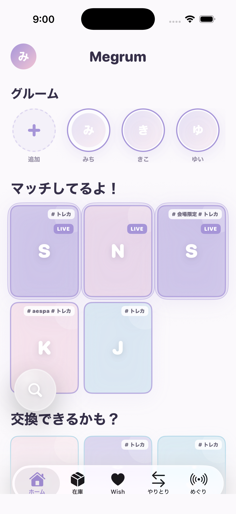
確認観点: matched棚のグッズパネル押下で関係図へ入り、possible棚も一方向候補として関係図へ入る。
2. 左ドロワー
任意位置から右スワイプ
指追従
X mobile風
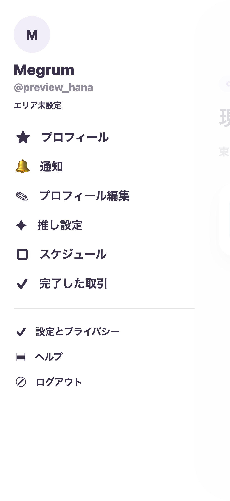
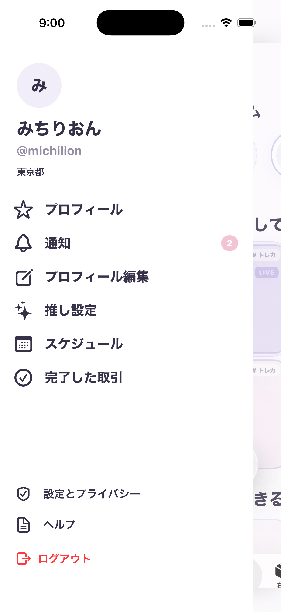
確認観点: 左端限定ではなく、ホームや各タブの任意位置から水平右スワイプで開く。縦スクロールは優先される。
3. 関係図
選択肢起点
候補展開
横スワイプ候補移動

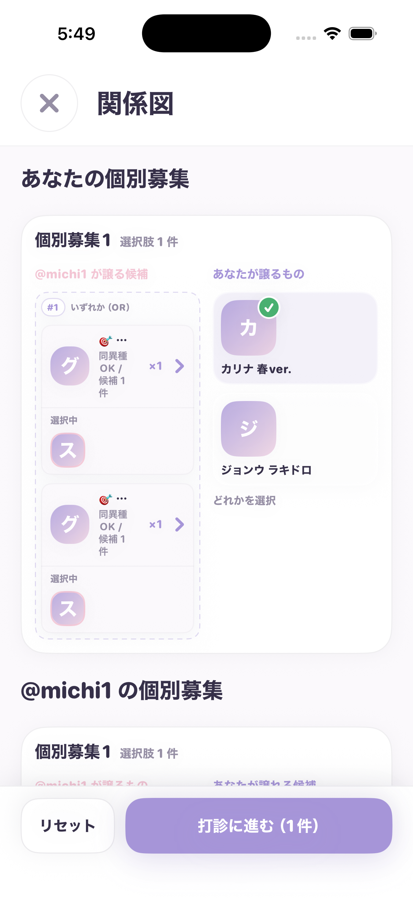
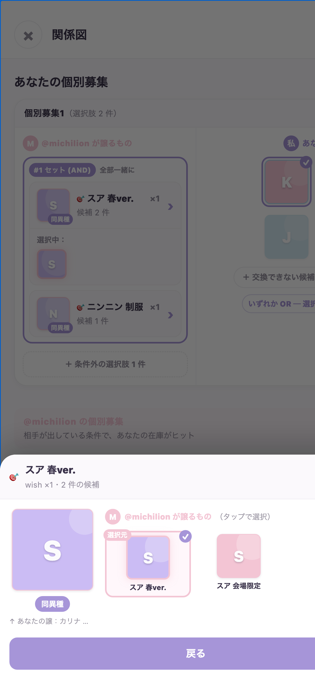
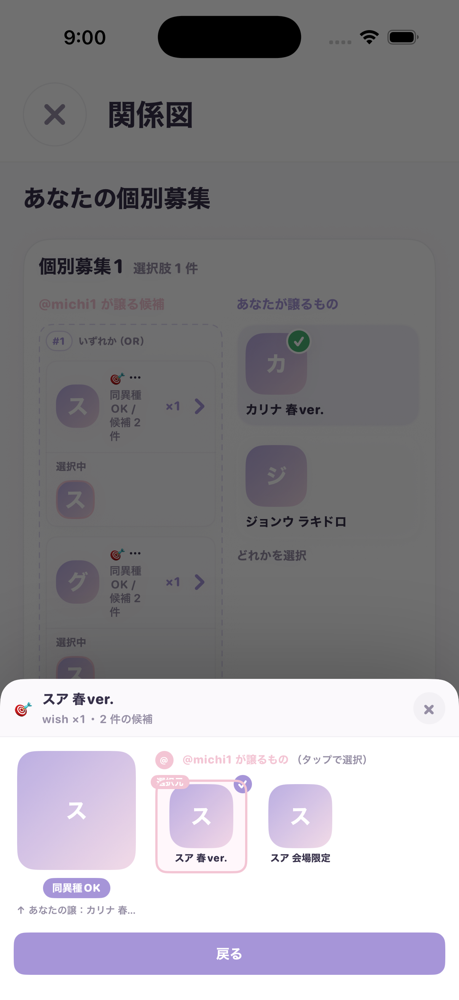
確認観点: 選択肢のグッズをタップして候補グッズが展開し、展開候補をタップして集計とCTA活性が更新される。
4. 打診作成 STEP1
私が出す
受け取る
待ち合わせ
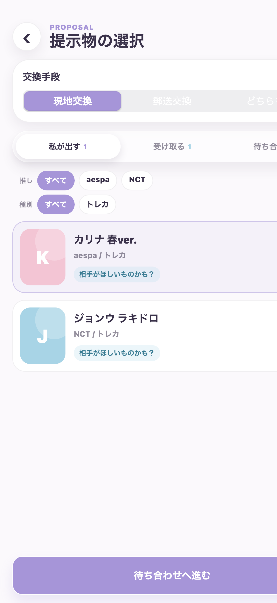
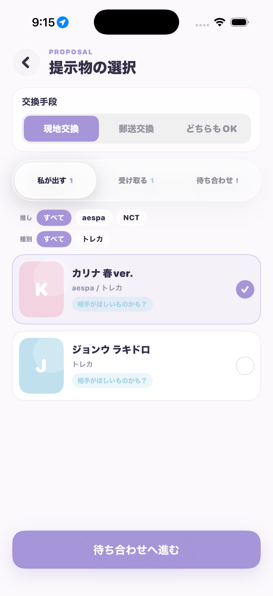
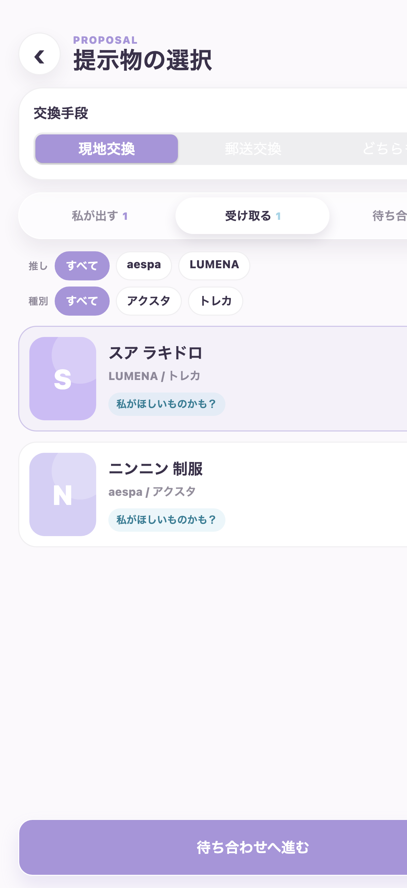
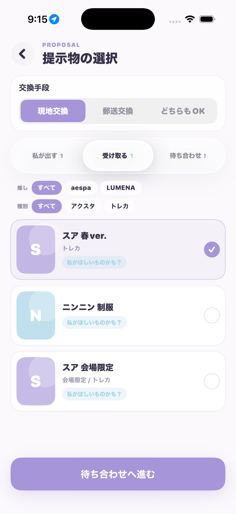
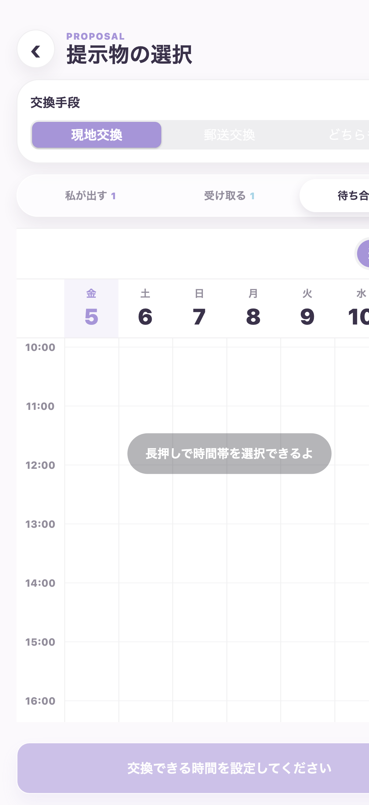
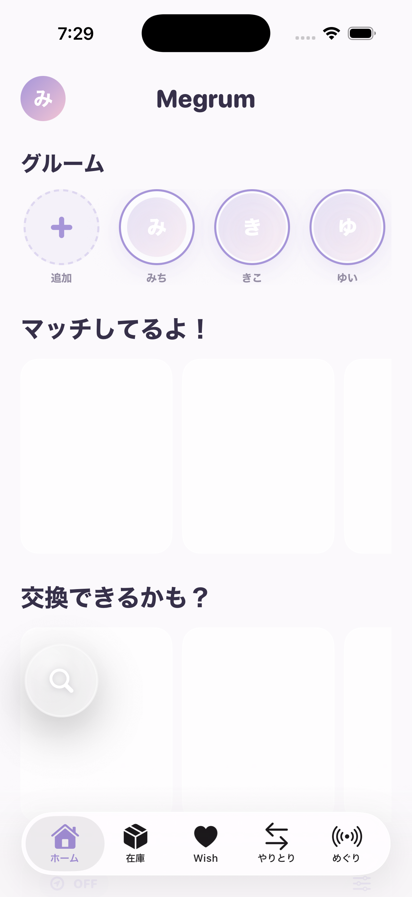
確認観点: give/receiveは横スワイプ切替、meetupでは横スワイプ切替を無効化。候補なし時はCTA無効。
5. 待ち合わせカレンダー（月表示）
週/月切替
週送り
長押し候補作成
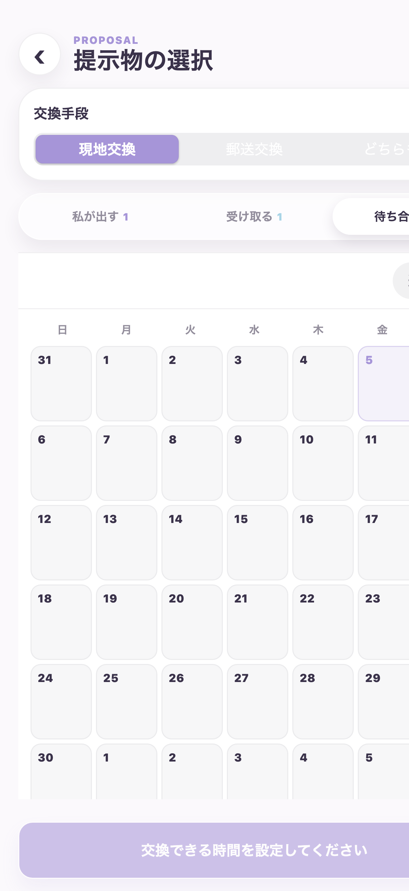
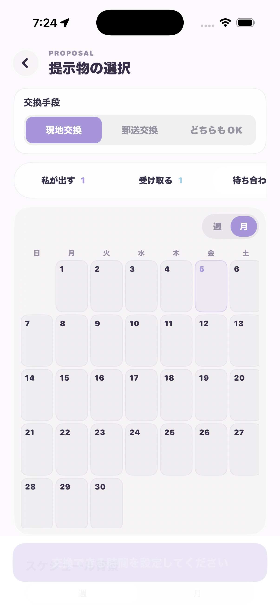
確認観点: 週送り横スワイプ、長押し作成、既存候補の移動/終了時刻調整、候補タップで場所入力へつながる。
6. 送信確認
STEP 2/2
表示順
送信payload
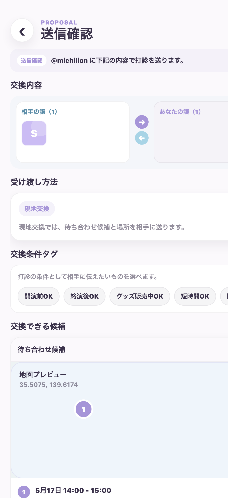
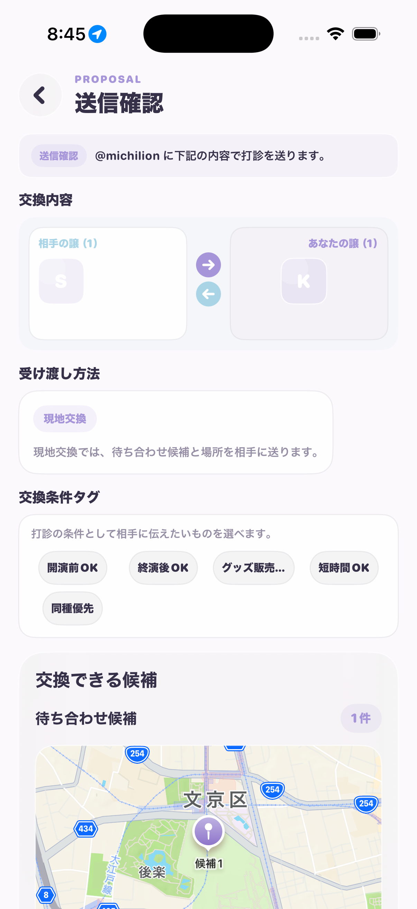
確認観点: 上部タブを出さず独立したSTEP 2/2にする。`この内容で打診を送信` で送信し、同じ確認状態からpayloadと完了summaryを作る。
7. 打診完了
2ボタン
まだ他に探す = ホーム
打診一覧に飛ぶ = pending
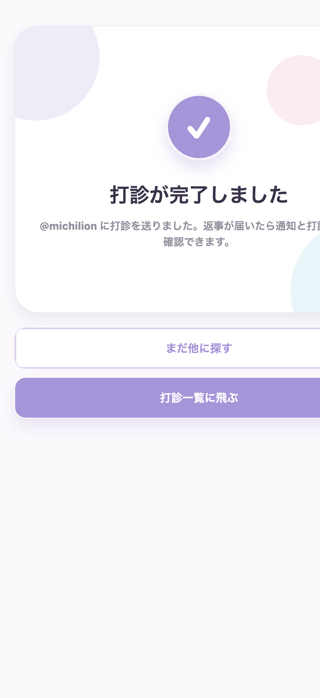
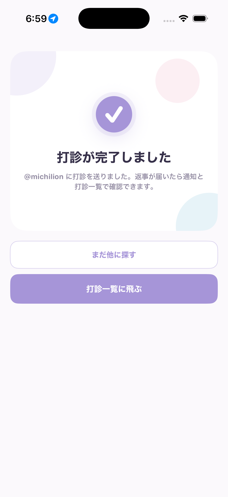
確認観点: 完了後CTAの着地先までRN準拠。Swiftでは `TradeChatAffordanceTests` でルート解決を固定している。
8. 打診一覧 pending着地
打診中タブ
pending件数
横スワイプ切替
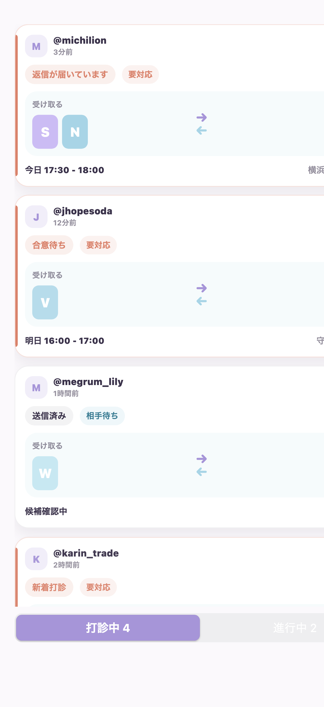
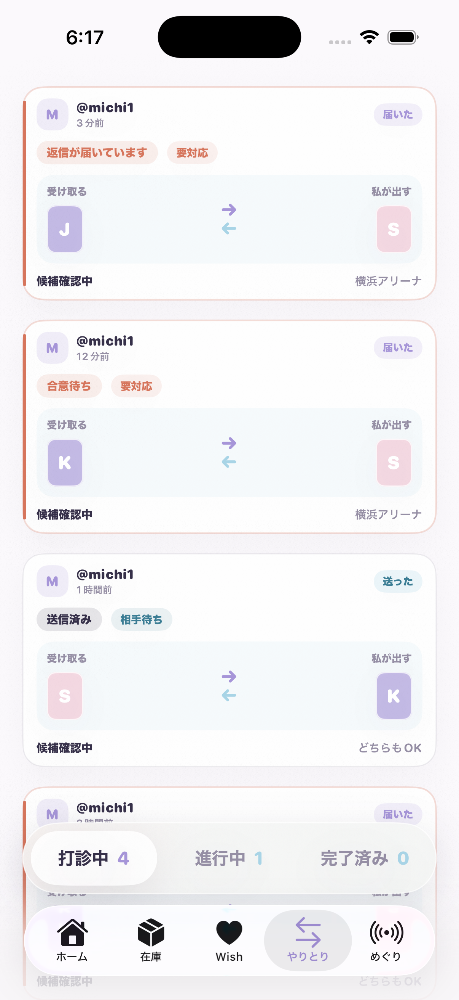
確認観点: 完了画面の `打診一覧に飛ぶ` 後は、やりとり一覧の pending/打診中 が最初に開く。